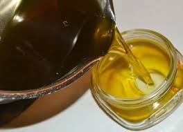

Las pomadas ecológicas, también conocidas como pomadas naturales o bio, son una excelente alternativa a las pomadas convencionales, ya que están elaboradas con ingredientes naturales y respetuosos con el medio ambiente.
Si te interesa aprender a elaborar tus propias pomadas ecológicas, aquí te presento una guía paso a paso:
Ingredientes basicos
- Fase oleosa: Aceites vegetales (por ejemplo, aceite de oliva, aceite de coco, aceite de almendras), mantecas vegetales (por ejemplo, manteca de karité, manteca de cacao), ceras vegetales (por ejemplo, cera de abeja, cera de carnauba).
- Fase acuosa: Hidrolatos florales (por ejemplo, hidrolato de hamamelis, hidrolato de lavanda), aloe vera, infusiones de hierbas.
- Emulsionante: Lecitina de soja, cera emulsionante.
- Activos: Aceites esenciales, extractos de plantas, vitaminas, minerales.
Materiales:
- Recipientes de vidrio o acero inoxidable.
- Balanza de precisión.
- Termómetro.
- Varilla de vidrio o espátula de silicona.
- Frasco de vidrio para almacenar la pomada.
Proceso de elaboración:
Preparacion de los ingredientes
- Mide con precisión la cantidad de cada ingrediente utilizando la balanza de precisión.
- Calienta la fase oleosa y la fase acuosa a baño maría en recipientes separados, hasta que alcancen una temperatura de entre 70°C y 80°C.
- Asegúrate de que ambas fases estén a la misma temperatura antes de mezclarlas.
Preparacion de los ingredientes
- Retira ambas fases del fuego
- vierte lentamente la fase acuosa sobre la fase oleosa mientras remueves enérgicamente con la varilla de vidrio o espatula de silicona hasta que se forme una emulcion cremosa hemogenea
- Puede utilizar una batidira de mano para facilitar el proceso de emulsión.
Adicion de activos
- Una vez que la emusion este estable, retira del fuego y deja enfriar un poco
- Agrega los activos (aceites asenciales, extractos de plantas ,vitaminas,minerales) a la emusion fria y mezcla bien.
Envasado
- Vierte la pomada en un frasco de vidrio previamente esterilizado
- Etiqueta el frasco con el nombre de la pomada, la fecha de elaboracion y los ingredientes
- Cierra bien el frasco y almacena la pomada en un lugar fresco ,seco y alejado de la luz solar
|  |